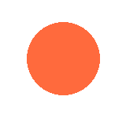

Public Art Locator — interactive prototype (mock data, no real backend)

Not part of the real app — this panel just simulates GPS so you can test PAL's reactions without walking around RiNo.
mockMurals in the script). It's meant to demonstrate the intended UX and response logic — swap in real coordinates, a live database, and PAL's real artwork once those exist.